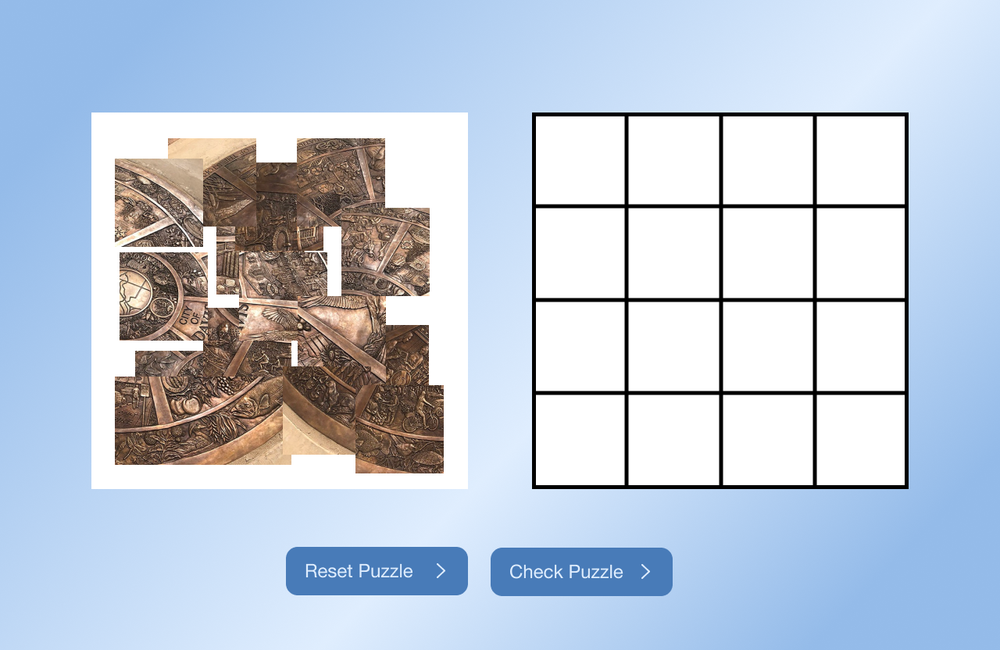
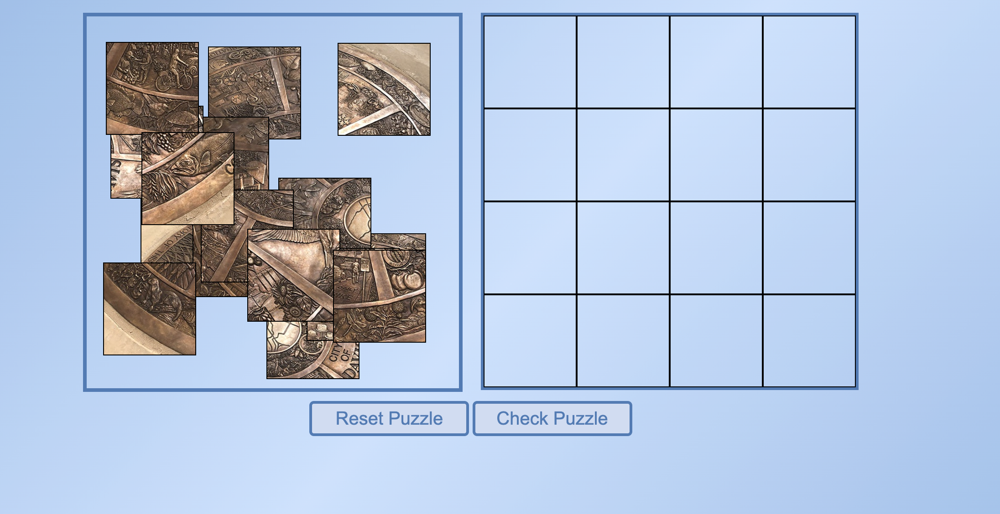
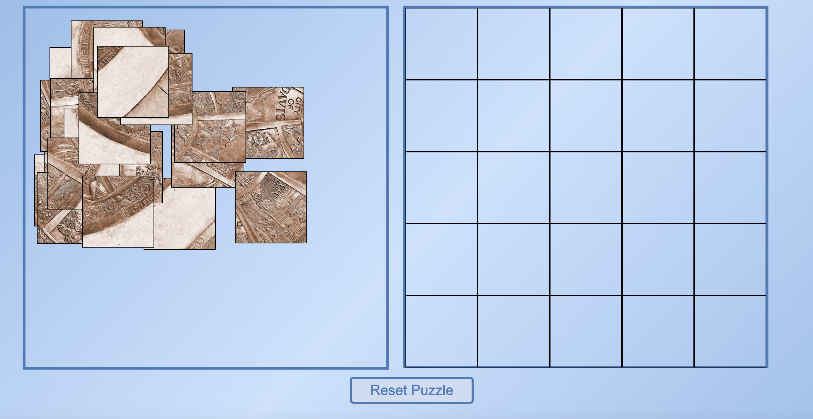
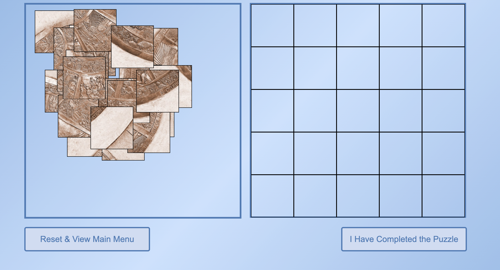
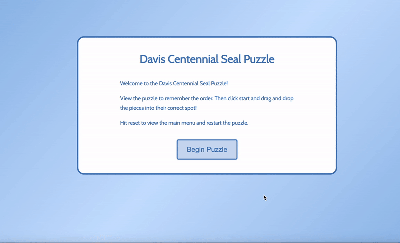
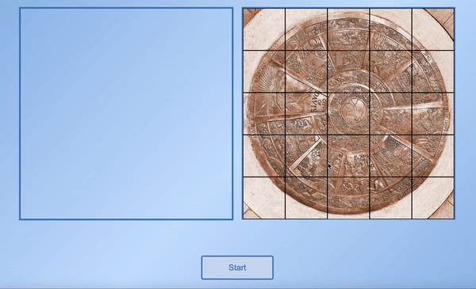
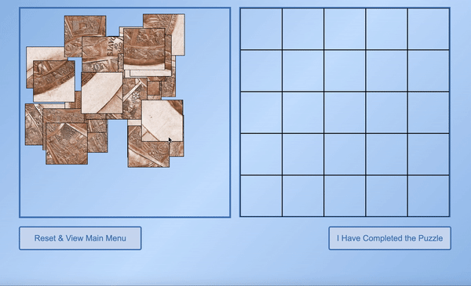
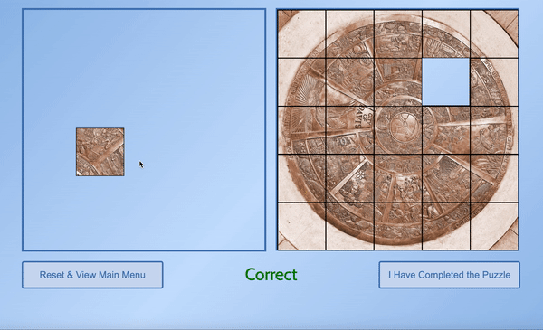
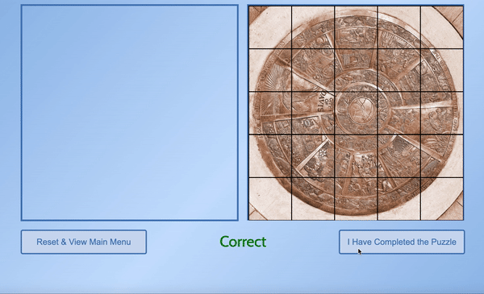

My project is a puzzle game of the Davis Centennial Seal. Its goal is to encourage users to take a closer look at the seal as they complete the puzzle. My target audience is college students, but I also want my puzzle to cater to any age group.
Jaclyn Walker
My project is a puzzle game of the Davis Centennial Seal. Its goal is to encourage users to take a closer look at the seal as they complete the puzzle. My target audience is college students, but I also want my puzzle to cater to any age group.
During my comparitive research, I looked at examples of other eductaional sites. I found that the best designed sites have simple yet engaing UI design. I also found that making information interactive is one of the most effective ways to get users to engage and remember what they learned.
Before my comparative research, I was somehwat unsure on my project idea. After doing research, my idea to create a puzzle was solidified because I realized it was an effective way to engage users with the material of the page.
In my digital comp, I decided to use a blue gradient background. The layout is centered around the puzzle, with buttons at the bottom.
In my version 1 design, I kept the blue gradient background. I also kept the layout but changed the button design and the ouzzle containers slightly.
In my version 2 design, I changed the photo of the puzzle and made the puzzle 35 pieces instead of 16.
In my version 3 design, I changed the style and layout of the buttons according to the code I had written.
The user is first prompted with and introductory statement instructions for the game. They can then click start.
The user can then view the puzzle before they begin the game. They then hit start and the pieces are shuffled.
The user can then drag and drop the puzzle pieces onto the grid. They are told whether they have placed it correctly or incorrectly.
The user can then drag and drop the puzzle pieces onto the grid. They are told whether they have placed it correctly or incorrectly.
Once the user feels they have finished, they can click that they are done. Theya re then shown a screen with links to learn more about the seal, or they can play again.
After user testing, I was able to further refine my project. I added animations that catch the user attention to better alert them when puzzle pieces are correctly and incorrectly placed. I also added a finishing screen the user can view when they have finished the game.
If I continued to further develop this project, I would add more features that describe the history of the seal. For example, I would allow the user to hover over parts of the ouzzle to learn about them. I would also change the UI design to make the page more visually appealing, since it is very plain right now and I feel it can be improved.
This project helped me learn a lot about JavaScript. Before this project, I felt unsure of my ability to use libraries and to create an interactive webpage. Writing the code for this puzzle challenged me to experiement more with code, and I feel like I have greatly improved my coding abilities in the process.